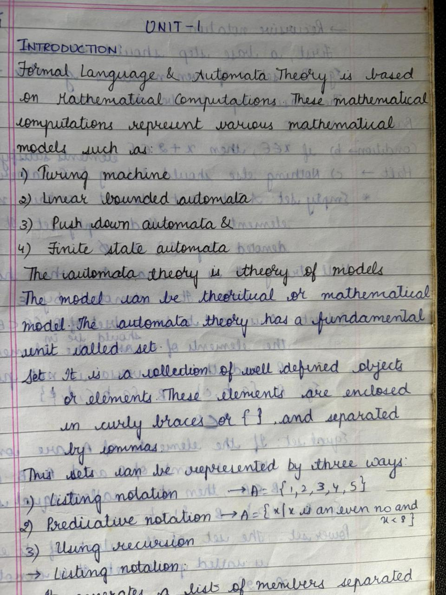

Unit I
Finite Automata
Central Concepts

DFA NFA DFA ≡ NFA ε-NFA Minimization Mealy & Moore Applications1
Need of Automata Theory & Central ConceptsCore Concept
Automata Theory studies abstract machines and the problems they can solve. It is the mathematical foundation of compiler design, pattern matching, and computation theory.
🌍 Real World ExampleWhen you type "recieve" instead of "receive", the spell checker instantly flags it using a Finite Automaton — scanning each word character by character against dictionary patterns.
Core Areas of Automata Theory
| Area | Real-World Use |
|---|---|
| Formal Languages | Designing programming languages (C, Java) |
| Automata (Machines) | Compilers, text editors, search engines |
| Computability Theory | What can a computer solve at all? |
| Complexity Theory | How fast can a problem be solved? |
Central Concepts
📌 Alphabet (Σ)A finite, non-empty set of symbols. Building block of any language.
💡 Example: Σ = {0,1} for binary; Σ = {a,b,...,z} for English
💡 Example: Σ = {0,1} for binary; Σ = {a,b,...,z} for English
📌 String (Word)A finite sequence of symbols from an alphabet. Empty string = ε (epsilon).
💡 Example: If Σ={a,b}, then "ab", "bba", "a", ε are strings
💡 Example: If Σ={a,b}, then "ab", "bba", "a", ε are strings
📌 LanguageA set of strings over an alphabet. Can be finite or infinite.
💡 Example: L = {all strings of even length over {a,b}}
💡 Example: L = {all strings of even length over {a,b}}
📌 AutomatonAn abstract machine that reads an input string and either ACCEPTS or REJECTS it.
💡 A vending machine accepts/rejects coins — it behaves like an automaton!
💡 A vending machine accepts/rejects coins — it behaves like an automaton!
📝 TIP: Strings are to Languages what Sentences are to English — strings make up a language, just like sentences make up literature!
Self-Assessment
Q1.
What is an alphabet? Give two examples from everyday life.Q2.
What is the difference between a string and a language?Q3.
Name two real-world systems that use automata theory.Q4.
What does ε (epsilon) represent in automata theory?2
Deterministic Finite Automaton (DFA)Core Concept
A DFA is a 5-tuple M = (Q, Σ, δ, q₀, F) that reads input one symbol at a time and makes exactly ONE deterministic move per step. For every state and every input, there is exactly one next state.
🌍 Real World ExampleA metro turnstile is a perfect DFA! States: LOCKED and UNLOCKED. Insert coin → LOCKED→UNLOCKED. Push → UNLOCKED→LOCKED. For every state and input, exactly one action.
Formal Definition — DFA 5-Tuple
QFinite, non-empty set of states. Example: Q = {q0, q1, q2}
ΣFinite set of input symbols (alphabet). Example: Σ = {0, 1}
δ: Q × Σ → QTransition function — given a state and input, returns the NEXT state (deterministic!). Example: δ(q0, 0) = q1
q₀ ∈ QStart state (initial state). Example: q₀ = q0
F ⊆ QSet of final/accepting states. Example: F = {q2}
Solved Example 1 — DFA for strings ending in "01"
States: q0 (start), q1 (last char = '0'), q2 (last two = '01') — FINAL
Σ = {0, 1}
Transition Table:
State | On 0 | On 1 | Remark
→ q0 | q1 | q0 | Start state
q1 | q1 | q2 | Last char = 0
* q2 | q1 | q0 | FINAL: last two = "01"
Accepts: 01, 001, 101, 1001
Rejects: 10, 00, 1, 11
→ denotes start state | * denotes final/accepting state
DFA Design Strategy
1
Understand what property the language describes
2
Identify what information needs to be "remembered" (this defines your states)
3
Create one state for each distinct memory scenario
4
Draw transitions for each state and each input symbol
5
Mark initial state (→) and final states (*)
6
Verify with sample strings (accepted and rejected)
Self-Assessment
Q1.
What does "deterministic" in DFA mean?Q2.
What are the 5 components of a DFA? Define each.Q3.
Design a DFA that accepts strings over {a,b} that start with "ab".Q4.
Trace the DFA from Example 1 on input string "1001". Is it accepted?3
Non-Deterministic Finite Automaton (NFA)Core Concept
An NFA can be in multiple states at once, make guesses, and can have zero, one, or many transitions for the same input. δ: Q × Σ → 2^Q (returns a SET of states). If ANY path leads to an accepting state, the string is ACCEPTED.
🌍 Real World ExampleGoogle Search Autocomplete — when you type "app", it shows multiple suggestions simultaneously ("apple", "application", "app store"). It explores ALL possibilities at once — exactly how an NFA works!
DFA vs NFA Comparison
| Feature | DFA | NFA |
|---|---|---|
| Transition | δ: Q×Σ→Q (one next state) | δ: Q×Σ→2^Q (set of states) |
| ε-transitions | Not allowed | Allowed |
| Design ease | Harder for some languages | More natural, easier |
| Power | Same as NFA | Same as DFA |
| Relation | Every DFA is an NFA | Not every NFA is a DFA (as-is) |
Solved Example — NFA for strings ending in "01"
States: q0 (start), q1 (saw '0'), q2 (saw '01') — FINAL
State | On 0 | On 1 | Remark
→ q0 | {q0, q1} | {q0} | Loop or guess start of "01"
q1 | {} | {q2} | Saw 0, waiting for 1
* q2 | {} | {} | FINAL: Accepted!
KEY: q0 has TWO transitions on input 0 — this is non-determinism!
📝 KEY: NFA accepts a string if at LEAST ONE computation path leads to a final state. Even if 100 paths reject and 1 accepts — it ACCEPTS!
Self-Assessment
Q1.
What is the key difference between a DFA and an NFA?Q2.
Can an NFA have zero transitions on some input? Give an example.Q3.
True or False: Every DFA is an NFA. Justify your answer.4
Equivalence of DFA and NFA & Subset ConstructionCore Concept
Theorem: DFA ≡ NFA — For every NFA, there exists a DFA that accepts exactly the same language. Both recognize exactly the class of Regular Languages.
Subset Construction Algorithm (NFA → DFA)
1
DFA start state = {q₀} (the NFA start state as a set)
2
For each DFA state (set of NFA states) and each input: compute union of δ_NFA(q, a) for all q in the current set
3
Add this new set as a DFA state if not already present
4
Repeat until no new states are generated
5
DFA final states = any set containing at least one NFA final state
6
Dead state = ∅ (empty set) — trap/sink state that rejects everything
⚠️ WARNING: The number of DFA states can be at most 2^n where n = number of NFA states. This is called the "state explosion" problem.
Self-Assessment
Q1.
State the theorem that proves DFA and NFA are equivalent.Q2.
An NFA has 3 states. What is the maximum number of states in its equivalent DFA?Q3.
What is a "dead state" in DFA conversion? When does it appear?5
Finite Automata with ε-Transitions (ε-NFA)Core Concept
An ε-transition allows an automaton to change state without consuming any input symbol — a "free step". ε-closure(q) = the set of ALL states reachable from q using only ε-transitions (including q itself).
🌍 Real World ExampleIn Delhi airport transit, you can freely move between international terminals WITHOUT going through immigration (ε-transition) — changing location without any "input".
ε-NFA to DFA Conversion
1
DFA start state = ε-closure({q₀})
2
For each DFA state S and input a: Move(S, a) = ∪{δ(q, a) : q ∈ S} → new DFA state = ε-closure(Move(S, a))
3
Add to DFA if not already present
4
DFA final states = sets containing any NFA final state
Self-Assessment
Q1.
What is an ε-transition? How is it different from a regular transition?Q2.
Define ε-closure. Compute ε-closure(q0) if q0→q1 via ε, q1→q2 via ε, q2→q3 via ε.Q3.
Why is ε-closure of a state always non-empty?6
Minimization of Finite AutomataCore Concept
Minimization removes unnecessary (indistinguishable) states to get the smallest equivalent DFA. The minimized DFA is unique for any regular language (Myhill-Nerode theorem).
Table Filling Algorithm
1
Remove all UNREACHABLE states
2
Create a table of all pairs (qi, qj) where i < j
3
Mark all pairs (final, non-final) as DISTINGUISHABLE (base case)
4
For each unmarked pair (p, q) and each input a: if (δ(p,a), δ(q,a)) is marked → mark (p, q)
5
Repeat until no new pairs can be marked
6
All UNMARKED pairs are INDISTINGUISHABLE → MERGE them into one state
📝 KEY: The minimized DFA is UNIQUE for a given regular language. This is guaranteed by the Myhill-Nerode theorem!
7
Mealy and Moore MachinesCore Concept
Mealy and Moore machines are FA that produce output (transducers), not just accept/reject. Moore: output depends on STATE. Mealy: output depends on STATE + INPUT.
🌍 Real World ExampleATM Machine — it produces outputs at each step: "Enter PIN", "Incorrect PIN", "Welcome!", "Select Amount", "Dispensing Cash". This sequence of outputs based on states and inputs is exactly what Mealy/Moore machines model!
Comparison
| Feature | Moore Machine | Mealy Machine |
|---|---|---|
| Output linked to | STATE | TRANSITION (state + input) |
| Output length | Input length + 1 | Input length |
| Output function | λ: Q → Δ | λ: Q × Σ → Δ |
| States needed | More states usually | Fewer states usually |
Solved Example — Mealy Machine for 1's Complement
Single state q0. Transition:
q0 on 0 → q0, output: 1 (flip 0 to 1)
q0 on 1 → q0, output: 0 (flip 1 to 0)
Input: "1011"
Output: "0100" ✓
8
Applications & Limitations of Finite AutomataReal-World Applications
1
Lexical Analysis in Compilers — tokenizing source code (keywords, identifiers, numbers)
2
Pattern Matching — grep, regex engines in Python/Java use FA
3
Text Editors — Search & Replace, syntax highlighting
4
Network Protocols — TCP/IP state machines, packet filtering
5
Digital Circuits — Sequential circuits, vending machines, traffic lights
6
Bioinformatics — DNA sequence pattern matching
Limitations — Languages FA CANNOT Recognize
FA has FIXED, FINITE memory (states). It CANNOT count unboundedly or remember unlimited history.
1. L = {aⁿbⁿ | n ≥ 1} — FA cannot count to arbitrary n
2. L = {wwᴿ | w ∈ {a,b}*} — FA cannot remember the full first half
3. L = {aⁿ | n is prime} — FA cannot perform primality testing
4. Balanced parentheses — needs a stack → needs Context-Free Grammar (Unit III!)
1. L = {aⁿbⁿ | n ≥ 1} — FA cannot count to arbitrary n
2. L = {wwᴿ | w ∈ {a,b}*} — FA cannot remember the full first half
3. L = {aⁿ | n is prime} — FA cannot perform primality testing
4. Balanced parentheses — needs a stack → needs Context-Free Grammar (Unit III!)
📝 TIP: The Pumping Lemma (Unit II) gives us a formal tool to PROVE that a language is NOT regular.
📋 Unit I — Question Bank
2-Mark Questions
- Define DFA with its 5-tuple formal definition.
- What is the difference between DFA and NFA?
- Define ε-closure of a state with an example.
- What is a dead state (trap state) in a DFA?
- Define Mealy machine and Moore machine.
- What are the limitations of Finite Automata?
- What does it mean for a string to be accepted by a DFA?
- State the equivalence theorem for DFA and NFA.
5-Mark Questions
- Design a DFA over Σ={0,1} that accepts strings with an odd number of 1s. Draw the transition diagram and give the transition table.
- Convert the NFA: States {q0,q1,q2}, Σ={a,b}, δ(q0,a)={q0,q1}, δ(q0,b)={q0}, δ(q1,b)={q2}, F={q2} to DFA using subset construction.
- Explain the minimization of DFA with the table-filling algorithm.
- Design a Mealy machine that outputs the 1's complement of a binary number.
- Explain ε-closure with an example. Convert an ε-NFA with 3 states to a DFA.
10-Mark Questions
- (a) Define DFA and NFA. (b) Prove DFA ≡ NFA. (c) Design NFA for strings containing "aba" as substring and convert to DFA.
- (a) Explain minimization algorithm for DFA. (b) Minimize a given 5-state DFA. (c) Show step-by-step table filling.
- Compare Mealy and Moore machines. Design both for detecting "101" in a binary string. Show equivalence.
Previous Year Questions
- Design a DFA that accepts strings over {a,b} where every "a" is followed by at least one "b". [2021]
- Prove that L = {0ⁿ1ⁿ | n≥1} is not regular using the pumping lemma. [2022]
- Convert NFA with ε-transitions to equivalent DFA. Show all steps. [2020]
- Minimize the given 6-state DFA to its minimum state equivalent. [2023]
- Design a Moore machine to detect divisibility by 3 of a binary number. [2021]
Unit II
Regular Expressions & Languages
Chomsky Hierarchy
Regular Expressions
Algebraic Laws
Arden's Theorem
Pumping Lemma
Closure Properties
1
Classification of Grammars — Chomsky HierarchyCore Concept
A formal grammar G = (V, T, P, S) defines rules to generate strings of a language. Chomsky classified all grammars into 4 types based on the production rule restrictions.
🌍 Real World ExampleWhen you write "int x = 5;" in C, the compiler uses a formal grammar to verify your syntax. Every programming language is defined by a formal grammar!
Chomsky Hierarchy
| Type | Name | Machine | Rule Form | Example |
|---|---|---|---|---|
| Type 0 | Unrestricted | Turing Machine | α → β (no restriction) | All computable languages |
| Type 1 | Context-Sensitive | LBA | |α| ≤ |β| | aⁿbⁿcⁿ |
| Type 2 | Context-Free | PDA | A → γ | aⁿbⁿ, palindromes |
| Type 3 | Regular | Finite Automaton | A → aB or A → a | a*, (ab)*, a*b* |
Memory Aid: "3-2-1-BLAST OFF!" — simple to powerful like a rocket! Type 3 ⊂ Type 2 ⊂ Type 1 ⊂ Type 0
2
Regular Expressions — Definitions & OperatorsCore Concept
A Regular Expression (RE) is a compact algebraic notation to describe Regular Languages. Every RE describes exactly one language, and every Regular Language has at least one RE.
🌍 Real World ExampleIn VS Code, press Ctrl+H and enable regex mode. Type "ab*c" to find strings starting with a, having zero or more b's, ending with c: "ac", "abc", "abbc" all match.
Basic RE Operators
| Operator | Symbol | Meaning | Example Strings |
|---|---|---|---|
| Empty Set | ∅ | No strings | (none) |
| Empty String | ε | Only the empty string | ε |
| Symbol | a | Just the single symbol a | "a" |
| Union | r + s | L(r) ∪ L(s) | a+b gives "a" or "b" |
| Concatenation | r·s | L(r) followed by L(s) | ab gives only "ab" |
| Kleene Star | r* | Zero or more repetitions | a* gives ε,a,aa,aaa... |
| Positive Closure | r+ | One or more repetitions | a+ gives a,aa,aaa... |
| Optional | r? | Zero or one occurrence | ab? gives "a" or "ab" |
Operator Precedence (High → Low)
1st: Parentheses ( )
2nd: Kleene Star * and Positive Closure + (unary)
3rd: Concatenation (juxtaposition)
4th: Union +
Example: ab*+c means (a(b*))+c NOT a(b*+c)
Common Regular Expressions
| Language | Regular Expression |
|---|---|
| Strings starting with 'a' over {a,b} | a(a+b)* |
| Strings ending with '01' over {0,1} | (0+1)*01 |
| Strings with even number of 0s | (1*01*0)*1* |
| Strings containing "ab" as substring | (a+b)*ab(a+b)* |
| All strings over {a,b} | (a+b)* |
| Non-empty strings over {a,b} | (a+b)+ |
3
Algebraic Laws & Arden's TheoremAlgebraic Laws for Regular Expressions
| Law | Expression |
|---|---|
| Idempotent | r + r = r |
| Commutativity of Union | r + s = s + r |
| Associativity of Union | (r+s)+t = r+(s+t) |
| Associativity of Concat | (rs)t = r(st) |
| Distributivity | r(s+t) = rs+rt |
| Identity for Union | r + ∅ = r |
| Identity for Concat | εr = rε = r |
| Zero for Concat | ∅r = r∅ = ∅ |
| Closure of ε | ε* = ε |
| Closure of ∅ | ∅* = ε |
| Double Closure | (r*)* = r* |
Arden's Theorem — FA to RE Conversion
Arden's TheoremIf P and Q are regular expressions and P does not contain ε, then the equation X = QP* + R has a unique solution X = QP* + R.
Used to convert a DFA/NFA into its equivalent Regular Expression by setting up and solving a system of equations.
Used to convert a DFA/NFA into its equivalent Regular Expression by setting up and solving a system of equations.
Method: For each state qi, write equation:
qi = (union of all terms: qj · a, for each transition qj→qi on a)
+ (ε if qi is the start state)
Apply substitution + Arden's theorem to solve for start state equation.
The solution gives the Regular Expression!
4
Pumping Lemma for Regular LanguagesCore Concept
The Pumping Lemma is a tool to PROVE a language is NOT regular. It states: if L is regular, then there exists a pumping length p such that any string w ∈ L with |w| ≥ p can be split into w = xyz where certain conditions hold.
Pumping Lemma Conditions
For any string w ∈ L with |w| ≥ p:
1. w = xyz
2. |y| ≥ 1 (y is non-empty)
3. |xy| ≤ p (xy fits in first p characters)
4. For all i ≥ 0, xyⁱz ∈ L (pumping y keeps string in L)
1. w = xyz
2. |y| ≥ 1 (y is non-empty)
3. |xy| ≤ p (xy fits in first p characters)
4. For all i ≥ 0, xyⁱz ∈ L (pumping y keeps string in L)
Proof Strategy (by Contradiction)
1
Assume L is regular, so pumping length p exists
2
Choose a specific string w ∈ L with |w| ≥ p
3
For ANY split w = xyz satisfying conditions, show xyⁱz ∉ L for some i
4
Contradiction! → L is NOT regular
💡 Classic Example: L = {aⁿbⁿ | n ≥ 1}
Choose w = aᵖbᵖ. Since |xy| ≤ p, y must be all a's (y = aᵏ for some k ≥ 1).
Pumping: xy²z = aᵖ⁺ᵏbᵖ — more a's than b's → NOT in L. Contradiction!
∴ L = {aⁿbⁿ} is NOT regular ✓
Choose w = aᵖbᵖ. Since |xy| ≤ p, y must be all a's (y = aᵏ for some k ≥ 1).
Pumping: xy²z = aᵖ⁺ᵏbᵖ — more a's than b's → NOT in L. Contradiction!
∴ L = {aⁿbⁿ} is NOT regular ✓
5
Closure Properties of Regular LanguagesCore Concept
Regular languages are closed under many operations — if L1 and L2 are regular, the result of applying these operations is also regular.
| Operation | Result Regular? | Proof Method |
|---|---|---|
| Union (L1 ∪ L2) | ✅ Yes | NFA construction |
| Concatenation (L1·L2) | ✅ Yes | NFA construction |
| Kleene Star (L1*) | ✅ Yes | NFA construction |
| Complement (L̄) | ✅ Yes | DFA: swap final/non-final states |
| Intersection (L1 ∩ L2) | ✅ Yes | Product construction or De Morgan's |
| Difference (L1 - L2) | ✅ Yes | L1 ∩ L̄2 |
| Reverse (Lᴿ) | ✅ Yes | Reverse all transitions in NFA |
| Homomorphism h(L) | ✅ Yes | Apply h to each transition label |
📋 Unit II — Question Bank
Key Questions
- Write a RE for: strings over {a,b} with at least two consecutive b's.
- State and prove the Pumping Lemma for regular languages.
- Prove that L = {0ⁿ1ⁿ | n ≥ 0} is not regular using the pumping lemma.
- State Arden's theorem. Use it to find the RE for a given DFA.
- Prove that regular languages are closed under complement. Give an example.
- Prove that regular languages are closed under intersection using product construction.
Unit III
Formal Languages & Context Free Grammars
CFG Definition
Derivations
Parse Trees
Ambiguous Grammars
Simplification
CNF
GNF
Pumping Lemma CFG
1
Context Free Grammar (CFG) — Definition & ExamplesCore Concept
A CFG G = (V, T, P, S) is a Type 2 grammar. Every production has the form A → α where A is a single variable. CFGs generate languages more complex than Regular Languages and are the foundation of programming language design.
🌍 Real World ExampleEvery programming language (Python, Java, C) is defined by a CFG. The grammar rule for if-statement: "if_statement → if ( condition ) { block }". Compilers use CFG rules to build parse trees representing your program's structure.
CFG 4-Tuple: G = (V, T, P, S)
VSet of Variables (Non-terminals) — appear on left side of productions
TSet of Terminals (actual symbols) — appear in the final string; V ∩ T = ∅
PSet of Production rules of the form A → α (where A ∈ V, α ∈ (V ∪ T)*)
SStart variable (S ∈ V) — derivation always begins here
Important CFG Examples
| Language | CFG Productions |
|---|---|
| L1: {aⁿbⁿ | n≥1} | S → aSb | ab |
| L2: Palindromes over {a,b} | S → aSa | bSb | a | b | ε |
| L3: Balanced Parentheses | S → SS | (S) | ε |
| L4: Arithmetic Expressions | E → E+E | E*E | (E) | id |
| L5: {aⁿbᵐ | n ≠ m} | S → A | B; A → aAb | aA | a; B → aBb | Bb | b |
2
Derivations & Parse TreesCore Concept
A derivation is a sequence of steps replacing variables with production bodies. Leftmost: always replace the leftmost variable. Rightmost: always replace the rightmost variable. A Parse Tree is the tree representation of a derivation.
Parse Tree Properties
RootThe start symbol S
Interior NodesVariables (non-terminals)
LeavesTerminals (or ε)
YieldReading leaves left-to-right gives the derived string
Every interior node and its childrenCorrespond to a single production rule
Example: G: E → E+E | E*E | (E) | id
Derive "id + id * id" (Leftmost):
E ⟹ E + E ⟹ id + E ⟹ id + E * E ⟹ id + id * E ⟹ id + id * id
Parse Tree:
E
/ | \
E + E
| / | \
id E * E
| |
id id
3
Ambiguous GrammarsCore Concept
A CFG is ambiguous if there exists a string with more than one parse tree (or more than one leftmost derivation). Ambiguity in compilers can cause different interpretations of the same program — a serious bug!
Example: E → E+E | E*E | id
For "id+id*id", there are TWO parse trees:
1. (id+id)*id — multiplication first
2. id+(id*id) — addition first
This grammar is AMBIGUOUS! Fix by defining precedence rules in the grammar.
For "id+id*id", there are TWO parse trees:
1. (id+id)*id — multiplication first
2. id+(id*id) — addition first
This grammar is AMBIGUOUS! Fix by defining precedence rules in the grammar.
Removing Ambiguity — Example Fix
Ambiguous: E → E+E | E*E | (E) | id
Unambiguous (with precedence * > +):
E → E + T | T (lowest precedence: +)
T → T * F | F (higher precedence: *)
F → (E) | id (highest: atom/parens)
📝 Note: Some CFLs are INHERENTLY AMBIGUOUS — no unambiguous CFG can generate them. Example: {aⁿbⁿcᵐ | n,m≥1} ∪ {aⁿbᵐcᵐ | n,m≥1}
4
Simplification of CFG, CNF, GNFSimplification Steps
1
Remove Useless Symbols: Symbols that never appear in any derivation of a terminal string
2
Remove ε-productions: Productions of form A → ε (except if ε ∈ L(G))
3
Remove Unit Productions: Productions of form A → B (variable → single variable)
Chomsky Normal Form (CNF)
Every CFG can be converted to CNF.
In CNF, every production has the form:
A → BC (two variables), or
A → a (single terminal)
In CNF, every production has the form:
A → BC (two variables), or
A → a (single terminal)
Use of CNF: CYK parsing algorithm requires CNF. Membership testing in O(n³) time.
Greibach Normal Form (GNF)
In GNF, every production has the form:
A → aα where a ∈ T and α ∈ V*
Every string derivation in GNF takes exactly n steps for a string of length n. Useful for constructing PDAs from CFGs.
A → aα where a ∈ T and α ∈ V*
Every string derivation in GNF takes exactly n steps for a string of length n. Useful for constructing PDAs from CFGs.
5
Pumping Lemma for CFLs & Closure PropertiesCore Concept
The Pumping Lemma for CFLs is used to prove a language is NOT context-free. If L is a CFL, any sufficiently long string w ∈ L can be split into w = uvxyz with certain "pumping" conditions.
Pumping Lemma for CFLs (Ogden's Lemma variant)
If L is a CFL, ∃ pumping length p such that for any w ∈ L with |w| ≥ p:
w = uvxyz where:
1. |vxy| ≤ p
2. |vy| ≥ 1 (v and y are not both empty)
3. For all i ≥ 0, uvⁱxyⁱz ∈ L
If L is a CFL, ∃ pumping length p such that for any w ∈ L with |w| ≥ p:
w = uvxyz where:
1. |vxy| ≤ p
2. |vy| ≥ 1 (v and y are not both empty)
3. For all i ≥ 0, uvⁱxyⁱz ∈ L
💡 Proving {aⁿbⁿcⁿ | n≥1} is NOT Context-Free
Choose w = aᵖbᵖcᵖ. For any split uvxyz, since |vxy| ≤ p, vxy cannot span all three sections.
Pumping up (i=2) creates imbalance in at least one count. Contradiction!
∴ {aⁿbⁿcⁿ} is NOT context-free (it needs a Turing Machine!)
Choose w = aᵖbᵖcᵖ. For any split uvxyz, since |vxy| ≤ p, vxy cannot span all three sections.
Pumping up (i=2) creates imbalance in at least one count. Contradiction!
∴ {aⁿbⁿcⁿ} is NOT context-free (it needs a Turing Machine!)
Closure Properties of CFLs
| Operation | CFL Closed? |
|---|---|
| Union (L1 ∪ L2) | ✅ Yes |
| Concatenation (L1·L2) | ✅ Yes |
| Kleene Star (L1*) | ✅ Yes |
| Complement (L̄) | ❌ No |
| Intersection (L1 ∩ L2) | ❌ No |
| Intersection with Regular | ✅ Yes |
📋 Unit III — Question Bank
Key Questions
- Design a CFG for L = {aⁿbⁿ | n≥1}. Show leftmost and rightmost derivations for "aaabbb".
- What is an ambiguous grammar? How do you remove ambiguity? Give example.
- Convert the following CFG to CNF: S→AB|a, A→aA|a, B→bB|b.
- Convert the following CFG to GNF.
- Prove that {aⁿbⁿcⁿ | n≥1} is not context-free using the pumping lemma.
- State the closure properties of CFLs. Which operations are CFLs NOT closed under?
Unit IV
Pushdown Automata (PDA)
PDA Definition
Graphical Notation
ID & Moves
Acceptance Modes
DPDA vs NPDA
CFG ↔ PDA
Two-Stack PDA
1
PDA — Definition, Model & ComponentsCore Concept
A PDA = Finite Automaton + STACK. The stack gives unlimited memory (LIFO). This allows PDA to recognize Context Free Languages that FA cannot handle, like balanced parentheses and aⁿbⁿ.
🌍 Real World ExampleA stack of plates in a cafeteria — you can only ADD (push) or REMOVE (pop) from the TOP. This LIFO structure lets PDAs count: push one plate per 'a', pop one per 'b' — when stack is empty, a's and b's were equal!
PDA 7-Tuple: M = (Q, Σ, Γ, δ, q₀, Z₀, F)
QFinite set of states
ΣInput alphabet
ΓStack alphabet (can differ from Σ)
δ: Q × (Σ ∪ {ε}) × Γ → 2^(Q×Γ*)Transition function. δ(q, a, A) = {(p, γ)} means: in state q, reading 'a', with A on stack top → go to p and replace A with γ
q₀Initial state
Z₀Initial stack symbol (bottom-of-stack marker)
FSet of final/accepting states
Stack Operations
| Operation | Replace A with | Effect |
|---|---|---|
| PUSH X onto stack | XA | X goes on top of A |
| POP top of stack | ε | A is removed |
| REPLACE A with B | B | Old top A becomes B |
| KEEP top unchanged | A | No change to stack |
FA vs PDA Comparison
| Feature | Finite Automaton | Pushdown Automaton |
|---|---|---|
| Tuple | 5-tuple | 7-tuple |
| δ | Q × Σ → Q | Q × (Σ∪{ε}) × Γ → 2^(Q×Γ*) |
| Memory | States only | States + Stack (LIFO) |
| Languages | Regular | Context Free |
| Example | a*b* | aⁿbⁿ |
2
Instantaneous Description & Language AcceptanceCore Concept
An Instantaneous Description (ID) = (q, w, γ) represents the complete current configuration of a PDA: current state q, remaining input w, current stack contents γ (top first).
Move notation: (q, aw, Aγ) ⊢ (p, w, βγ) if δ(q, a, A) contains (p, β)
Two Modes of Acceptance
| Mode | Acceptance Condition | Notation |
|---|---|---|
| Final State | PDA reaches a final state after consuming all input | N(M) = {w | (q₀,w,Z₀) ⊢* (f,ε,γ), f∈F} |
| Empty Stack | PDA empties the stack after consuming all input | L(M) = {w | (q₀,w,Z₀) ⊢* (q,ε,ε)} |
📝 KEY: Both acceptance modes are equivalent — for every PDA accepting by final state, there's a PDA accepting same language by empty stack, and vice versa.
Solved Example — PDA for {aⁿbⁿ | n≥1}
Strategy: Push 'a' for each input 'a'. Pop 'a' for each input 'b'. Accept by empty stack.
States: {q0, q1}
δ(q0, a, Z0) = {(q0, AZ0)} — Push A, keep Z0
δ(q0, a, A) = {(q0, AA)} — Push another A
δ(q0, b, A) = {(q1, ε)} — Pop A on reading b (switch to q1)
δ(q1, b, A) = {(q1, ε)} — Keep popping A for each b
δ(q1, ε, Z0) = {(q1, ε)} — Pop Z0 — accept by empty stack
Trace for "aabb":
(q0,aabb,Z0) ⊢ (q0,abb,AZ0) ⊢ (q0,bb,AAZ0)
⊢ (q1,b,AZ0) ⊢ (q1,ε,Z0) ⊢ (q1,ε,ε) ACCEPT ✓
3
DPDA vs NPDA & Equivalence with CFGDPDA vs NPDA
| Feature | DPDA | NPDA |
|---|---|---|
| Transitions | At most one move per (q, a, A) | Multiple moves possible |
| Power | Less powerful than NPDA | Full CFL power |
| Languages | Deterministic CFLs only | All CFLs |
| Example | Palindromes with middle marker | Palindromes without marker |
| Parsing | LR parsing (unambiguous grammars) | Earley, CYK parsing |
⚠️ Unlike FA: DPDA ≠ NPDA in power! Non-determinism adds expressive power for PDAs.
Equivalence: PDA ↔ CFG
Theorem: A language L is a CFL if and only if there exists a PDA that accepts L.
CFG → PDA: Create a PDA that simulates leftmost derivation using stack
PDA → CFG: Create variables [p,A,q] representing "going from state p to q while clearing A from stack"
CFG → PDA: Create a PDA that simulates leftmost derivation using stack
PDA → CFG: Create variables [p,A,q] representing "going from state p to q while clearing A from stack"
📋 Unit IV — Question Bank
Key Questions
- Define PDA as a 7-tuple. Explain each component with an example.
- Design a PDA for L = {aⁿbⁿ | n≥1}. Trace it on input "aaabbb".
- What is an Instantaneous Description? Show the move sequence for a given PDA.
- Explain the two modes of acceptance of a PDA. Are they equivalent?
- Differentiate DPDA and NPDA. Give an example language accepted by NPDA but not DPDA.
- State the theorem on equivalence of PDA and CFG. Outline the CFG→PDA conversion.
- Design a PDA to accept palindromes over {a,b}.
Unit V
Turing Machines & Computability
TM Definition
ID & Moves
TM Variants
Church-Turing Thesis
Decidability
Halting Problem
Rice's Theorem
P and NP
1
Turing Machine — Definition, Model & ComponentsCore Concept
A Turing Machine (TM) is the most powerful model of computation. It has an infinite tape (read/write), a read-write head that can move left or right, and a finite control. TMs recognize Recursively Enumerable Languages (Type 0 in Chomsky hierarchy).
🌍 Real World ExampleYour computer is essentially a Turing Machine! It reads/writes memory, executes instructions in sequence, and can solve any algorithmically solvable problem. The TM is the mathematical model that proves what computers can (and CANNOT) do.
TM 7-Tuple: M = (Q, Σ, Γ, δ, q₀, B, F)
QFinite set of states
ΣInput alphabet (Σ ⊂ Γ, B ∉ Σ)
ΓTape alphabet (includes Σ and blank B)
δ: Q × Γ → Q × Γ × {L, R}Transition function. δ(q, X) = (p, Y, D) means: in state q, reading X → go to p, write Y, move head in direction D (L=Left, R=Right)
q₀Initial state
BBlank symbol (represents empty tape cells)
FSet of final/accepting states
TM vs PDA vs FA
| Feature | FA | PDA | Turing Machine |
|---|---|---|---|
| Memory | States only | Stack (LIFO) | Infinite tape (R/W) |
| Head movement | Right only | Right only | Left and Right |
| Languages | Regular (Type 3) | CFL (Type 2) | RE (Type 0) |
| Grammar | Regular | Context-Free | Unrestricted |
| Tape | Read-only input | Read-only + stack | Read/Write infinite |
2
Instantaneous Description & Language AcceptanceCore Concept
An ID of a TM is written as α q β, where q is the current state, α is the tape content to the LEFT of the head, and β is the tape content from the head position onwards (first symbol is under the head).
Move notation: αXqYβ ⊢ αXpZβ if δ(q, Y) = (p, Z, R) (right move)
αqXYβ ⊢ pαZYβ if δ(q, X) = (p, Z, L) (left move)
αqXYβ ⊢ pαZYβ if δ(q, X) = (p, Z, L) (left move)
TM Acceptance Modes
| Mode | Condition | Language Class |
|---|---|---|
| Accept by final state | TM enters a final state q_f ∈ F | Recursively Enumerable (RE) |
| Halt and accept | TM halts in accepting state | Recursive (Decidable) |
| Halt and reject | TM halts in non-accepting state | — |
| Loop forever | TM never halts (on some inputs) | Input not in language |
Solved Example — TM for {aⁿbⁿcⁿ | n≥1}
Strategy: Cross off one a, one b, one c repeatedly until all are matched.
States: q0 (start), q1 (scanned a), q2 (scanned b), q3 (returning left), q_accept, q_reject
Step 1: q0 reads 'a' → write X, move Right, go to q1 (looking for b)
Step 2: q1 reads 'a/X' → move Right (skip a's and X's, find b)
Step 3: q1 reads 'b' → write Y, move Right, go to q2 (looking for c)
Step 4: q2 reads 'b/Y' → move Right (skip b's and Y's, find c)
Step 5: q2 reads 'c' → write Z, move Left, go to q3 (return to start)
Step 6: q3 moves Left until reaching leftmost unmarked 'a' → go to q0
Step 7: If q0 reads B (blank) → check all X,Y,Z → ACCEPT
If counts mismatch at any step → REJECT
This language is NOT context-free — requires a TM!
3
TM Variants & Church-Turing ThesisTM Variants (All Equivalent in Power)
| Variant | Feature | Equivalence |
|---|---|---|
| Standard TM | Single tape, deterministic | Base model |
| Multi-tape TM | k tapes, k heads | ≡ Standard TM (time: O(t²)) |
| Non-deterministic TM | Multiple moves at each step | ≡ Standard TM |
| 2-way infinite tape | Tape extends infinitely in both directions | ≡ Standard TM |
| Multi-dimensional TM | k-dimensional tape grid | ≡ Standard TM |
| Enumerator | Generates (prints) all strings of a language | ≡ Standard TM |
Church-Turing Thesis
Church-Turing Thesis (not a theorem — a thesis/belief):
"Every effectively computable function is computable by a Turing Machine."
In other words: TM = the ultimate model of computation. Any algorithm that can be described precisely can be implemented on a TM.
This cannot be mathematically proved (it's a claim about the nature of computation), but no counterexample has ever been found.
"Every effectively computable function is computable by a Turing Machine."
In other words: TM = the ultimate model of computation. Any algorithm that can be described precisely can be implemented on a TM.
This cannot be mathematically proved (it's a claim about the nature of computation), but no counterexample has ever been found.
📝 Implication: If a problem has no TM solution, it has NO algorithmic solution by any computer — past, present, or future!
4
Decidability — Decidable and Undecidable ProblemsCore Concept
A language L is decidable (recursive) if there exists a TM that HALTS on every input and accepts if input ∈ L, rejects otherwise. A language is undecidable if no such TM exists — the problem cannot be algorithmically solved!
Language Classes
| Class | Recognizable by | TM Behavior | Example |
|---|---|---|---|
| Regular | FA | Always halts | a*b* |
| CFL | PDA | Always halts | aⁿbⁿ |
| Recursive (Decidable) | TM (always halts) | Halts on all inputs | aⁿbⁿcⁿ |
| RE (Semi-decidable) | TM (may loop) | Accepts ∈ L, loops on ∉ L | Halting problem inputs that halt |
| Non-RE | No TM | Cannot even recognize | Complement of halting problem |
Decidable Problems (Examples)
✅
A_DFA = {(M,w) | DFA M accepts string w} — DECIDABLE
✅
E_DFA = {(M) | L(M) = ∅} — DECIDABLE
✅
EQ_DFA = {(M1,M2) | L(M1) = L(M2)} — DECIDABLE
✅
A_CFG = {(G,w) | CFG G generates w} — DECIDABLE (CYK algorithm)
5
The Halting Problem & UndecidabilityCore Concept
The Halting Problem H = {(M, w) | TM M halts on input w} is UNDECIDABLE. No algorithm can determine for all (M, w) pairs whether M will halt on w. This was proven by Alan Turing in 1936 using diagonalization/self-reference contradiction.
Proof of Undecidability (Contradiction)
1
Assume ∃ TM H that decides the halting problem: H(M,w) = ACCEPT if M halts on w; REJECT otherwise
2
Construct a new TM D that uses H as subroutine: D(M) = if H(M,M) = ACCEPT → LOOP; if H(M,M) = REJECT → HALT
3
Run D on itself: D(D) = if H(D,D) = ACCEPT (D halts on D) → D LOOPS (contradiction!)
4
D(D) = if H(D,D) = REJECT (D doesn't halt on D) → D HALTS (contradiction!)
5
Both cases lead to contradiction → H cannot exist → Halting Problem is UNDECIDABLE ✓
⚠️ Important Implications:
• We cannot write a program to check if any given program has an infinite loop
• We cannot write a perfect virus scanner (would need to decide behavior of arbitrary programs)
• Many software verification problems are undecidable in general
• We cannot write a program to check if any given program has an infinite loop
• We cannot write a perfect virus scanner (would need to decide behavior of arbitrary programs)
• Many software verification problems are undecidable in general
6
Rice's TheoremCore Concept
Rice's Theorem: Any non-trivial semantic property of a Turing Machine is UNDECIDABLE. A property P is trivial if it holds for ALL TMs or NO TMs. Everything else is undecidable!
💡 Consequences of Rice's Theorem (all UNDECIDABLE):
• "Does TM M accept the empty string?"
• "Is the language of TM M a regular language?"
• "Does TM M accept at least 5 strings?"
• "Do two TMs M1 and M2 accept the same language?"
• "Is TM M's language context-free?"
• "Does TM M accept the empty string?"
• "Is the language of TM M a regular language?"
• "Does TM M accept at least 5 strings?"
• "Do two TMs M1 and M2 accept the same language?"
• "Is TM M's language context-free?"
📝 How to use Rice's Theorem: Identify the property being asked about → Check if it's about the LANGUAGE (semantic) → Check if it's non-trivial (some TMs satisfy it, some don't) → If both: UNDECIDABLE by Rice's theorem!
7
Complexity Classes P, NP & NP-CompletenessCore Concept
Complexity theory asks: even for decidable problems, how efficiently can they be solved? Class P = problems solvable in polynomial time. Class NP = problems verifiable in polynomial time. The P vs NP question is the most famous unsolved problem in computer science!
Key Complexity Classes
| Class | Definition | Examples |
|---|---|---|
| P | Decidable in O(nᵏ) time on deterministic TM | Sorting, shortest path, primality testing |
| NP | Decidable in O(nᵏ) time on non-deterministic TM (or verifiable in poly time) | SAT, TSP, Graph Coloring, Subset Sum |
| NP-Complete | In NP AND every NP problem reduces to it | 3-SAT, Clique, Hamiltonian Path |
| NP-Hard | Every NP problem reduces to it (may not be in NP) | Halting Problem, TSP optimization |
| PSPACE | Solvable using polynomial space | Quantified Boolean Formula (QBF) |
Cook's Theorem — SAT is NP-Complete
Cook-Levin Theorem (1971): The Boolean Satisfiability Problem (SAT) is NP-Complete.
This means: if SAT can be solved in polynomial time, then P = NP and ALL NP problems are in P!
This means: if SAT can be solved in polynomial time, then P = NP and ALL NP problems are in P!
Polynomial Time Reduction
A ≤ₚ B (A reduces to B): If we can solve B in polynomial time, we can solve A in polynomial time.
To show problem X is NP-Complete:
1. Show X ∈ NP (give a polynomial verifier)
2. Show a known NP-Complete problem ≤ₚ X
To show problem X is NP-Complete:
1. Show X ∈ NP (give a polynomial verifier)
2. Show a known NP-Complete problem ≤ₚ X
🌍 Real World Significance of P vs NP
If P = NP:
• RSA encryption (used in banking, internet security) would be broken
• Drug discovery, protein folding, scheduling — all solvable efficiently
• AI would be dramatically more powerful
If P ≠ NP (widely believed but unproven):
• Internet security remains safe
• Many optimization problems remain computationally hard
If P = NP:
• RSA encryption (used in banking, internet security) would be broken
• Drug discovery, protein folding, scheduling — all solvable efficiently
• AI would be dramatically more powerful
If P ≠ NP (widely believed but unproven):
• Internet security remains safe
• Many optimization problems remain computationally hard
📋 Unit V — Question Bank
2-Mark Questions
- Define Turing Machine with its 7-tuple formal definition.
- What is an Instantaneous Description (ID) of a TM? Give an example.
- State the Church-Turing Thesis. Why is it a "thesis" and not a "theorem"?
- Define recursive and recursively enumerable languages.
- What is the Halting Problem? Is it decidable?
- State Rice's Theorem.
- Define the complexity classes P and NP.
- What does NP-Complete mean? Give two examples.
5-Mark Questions
- Design a TM for L = {aⁿbⁿcⁿ | n≥1}. Give the transition function and trace on "aabbcc".
- Explain the difference between multi-tape TM and single-tape TM. Are they equivalent?
- Prove that the Halting Problem is undecidable (by contradiction/diagonalization).
- State and explain Rice's Theorem. Give three examples of undecidable properties.
- Explain the relationship between P, NP, NP-Complete, and NP-Hard with a diagram.
10-Mark Questions
- (a) Define TM formally. (b) Construct TM for L={ww^R | w∈{a,b}*}. (c) Explain TM variants and their equivalence.
- (a) State Church-Turing Thesis. (b) Define decidable and semi-decidable languages. (c) Prove the Halting Problem is undecidable. (d) Give 3 examples of undecidable problems.
- (a) State Rice's Theorem and prove it. (b) Use it to show 3 undecidable properties of TMs. (c) Distinguish RE and non-RE languages.
- (a) Define P, NP, NP-Complete, NP-Hard. (b) State Cook's Theorem. (c) Show 3-SAT is NP-Complete by reduction from SAT. (d) Discuss the P=NP? question and its implications.
Previous Year Questions
- Design a TM for L = {0ⁿ1ⁿ | n≥1}. Show transition function and computation on "0011". [2022]
- State and prove that the Halting Problem is undecidable. [2023]
- State Rice's Theorem. Use it to prove that the language {M | M accepts at least one string} is undecidable. [2021]
- Explain the classes P and NP. What is the P vs NP problem? State Cook's theorem. [2022]
- Differentiate between decidable and undecidable problems with examples. [2023]